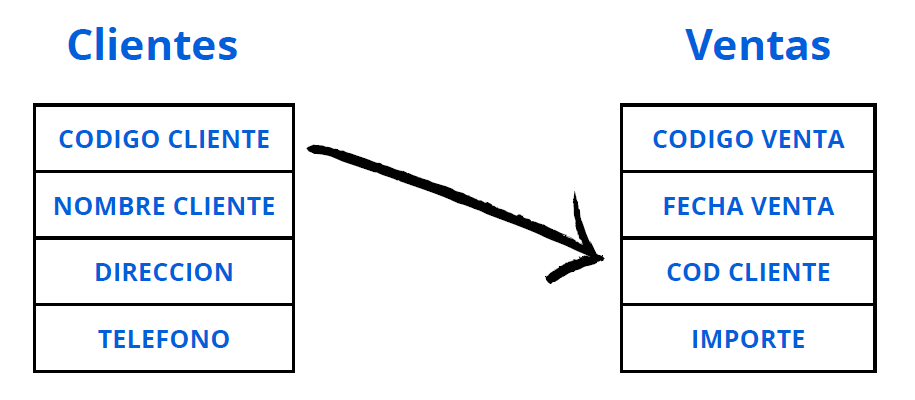

Relaciones entre tablas
Las relaciones entre tablas permiten conectar información de diferentes fuentes dentro de AppSheet.
¿Qué es una relación?
Una relación ocurre cuando una tabla usa un campo que hace referencia a otra tabla. Por ejemplo, una tabla de Pedidos puede incluir una columna que apunte a la tabla de Clientes.

Tipos comunes de relación
- Uno a muchos: Un cliente puede tener varios pedidos.
- Muchos a uno: Muchos pedidos pertenecen a un mismo cliente.
- Muchos a muchos: Se da cuando varias tablas se conectan entre sí mediante una tabla intermedia.
Campos clave
Para crear relaciones, se usan campos clave (IDs) que identifican de forma única cada registro. AppSheet detecta estas claves y permite mostrar datos relacionados de forma automática.
Importancia
Las relaciones entre tablas permiten que la aplicación maneje datos más completos y organizados, evitando duplicar información y facilitando la creación de vistas detalladas.